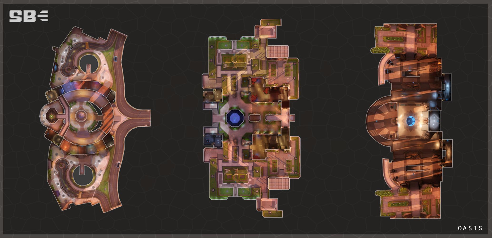

綠
洲城是世界上最先進的城市之一，是從阿拉伯沙漠升起
的閃亮寶石，也是人類獨創性和發明的紀念碑。來自該
地區的研究人員和學者齊聚一堂，共同建立了一個致力於科學
進步而不受約束的城市。這個城市及其居民由綠洲城議會管理
，這個議會擁有許多秘密，而這些秘密吸引了來自世界各地的
強大組織的興趣。
綠洲城位於伊拉克的阿拉伯沙漠中。它由易卜拉欣․哈桑、安
雅․沙赫拉尼、尤賽夫․賈比里和穆罕默德․法哈特領導的八位
頂尖科學家組成。他們正在尋找一種方法來突破當時現代科
學的界限。儘管受到法規的阻礙，他們仍然認為現代世界的
科學進步速度太慢。為此，他們創立了綠洲城作為人類聰明
才智的證明。在他們看來，有什麼更好的方法可以做到這一
點，而不是將荒涼的景觀變成世界上技術最先進和最奇妙的
城市之一，這可以作為不受限制的科學努力的中心。 （由安
雅․沙赫拉尼博士領導的地質部通過開發能夠在沙漠環境中維
持蓬勃發展的城市的尖端技術帶頭開展這項工作。）
根據其提升人類知識的目標，綠洲城擁有地球上受教育程度最
高的人群之一，由最先進的大學和世界上所有已知現有印刷材
料的數據庫提供服務。由於採用了先進的預測監控和犯罪模型
，它還被列為最安全的城市之一。居民還可以使用各種世界一
流的設施，如青翠的阿布哈桑花園，溫控街道，豪華的金塔酒
店以及被認為是世界上最好的餐飲場所的elBuffi餐廳。也許
引起關注的唯一原因是交通運輸部已經發佈公共諮詢的城市交
通擁堵。綠洲最知名的地標之一是一座神秘的塔樓，無限期地
建設中。它已經是世界上最高的建築，它將成為任何一種最高
的獨立式建築。據信該項目是該市不斷擴展的計算和數據收集
工作的一部分。
維旭卡公司希望在該市開展業務。



 回首頁
回首頁